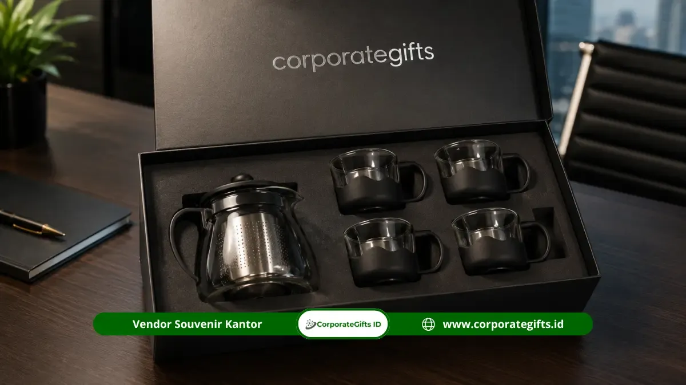

Corporate Gifts ID - Manfaat souvenir tea set kantor bagi perusahaan adalah meningkatkan retensi memori merek (brand recall), memperkokoh loyalitas karyawan, membangun kesan profesional pada relasi bisnis, serta memberikan nilai investasi promosi jangka panjang karena produk ini dipakai berulang kali setiap hari di lingkungan kerja.
Souvenir jenis ini berbeda signifikan dari merchandise sekali pakai karena fungsinya yang menyatu dengan rutinitas minum teh dan kopi harian, membuat identitas visual perusahaan senantiasa terlihat secara elegan. Manfaat nyata ini menjadikan tea set sebagai pilihan souvenir kantor eksklusif yang bernilai strategis tinggi, bukan sekadar formalitas bingkisan seremonial semata.
Poin Kunci Manfaat Souvenir Tea Set Kantor:
- Brand Recall Tinggi: Digunakan harian saat jeda istirahat kerja sehingga logo perusahaan terus terpapar secara organik.
- Apresiasi Bermakna: Menghadirkan rasa dihargai yang mendalam bagi karyawan dan mitra atas jalinan kerja sama yang kokoh.
- Investasi Promosi Efisien: Material keramik dan kaca borosilikat berdaya tahan tahunan, memangkas biaya promosi berulang.
- Fleksibilitas Lintas Acara: Relevan untuk perayaan ulang tahun kantor, bingkisan akhir tahun, hingga suvenir penandatanganan kontrak bisnis.
- Karakter Formal & Hangat: Menciptakan suasana jamuan bisnis yang bersahabat tanpa mengurangi martabat korporat.
Apa Manfaat Souvenir Tea Set Kantor bagi Karyawan?
Bagi karyawan internal, souvenir tea set kantor menghadirkan sentuhan personal yang menenangkan di sela kesibukan kerja, sekaligus menjadi wujud nyata pengakuan atas dedikasi mereka:
Meningkatkan Rasa Dihargai
Pemberian suvenir fungsional berkualitas tinggi seperti tea set berlogo khusus membuat staf merasa kontribusinya diakui secara tulus, bukan sekadar lewat ucapan formal. Rasa dihargai ini berkontribusi langsung pada peningkatan motivasi kerja dan rasa memiliki (sense of belonging) terhadap perusahaan.
Menambah Kenyamanan di Ruang Kerja
Menikmati secangkir teh hangat atau kopi di meja kerja menggunakan tea set pribadi yang estetik memberikan momen relaksasi singkat di tengah tekanan deadline kerja harian. Hal ini menciptakan atmosfer kerja yang lebih positif, nyaman, dan produktif.
Bagaimana Souvenir Tea Set Kantor Membantu Branding Perusahaan?
Souvenir tea set kantor menjadi instrumen branding yang sangat efektif karena menyajikan paparan logo secara alami tanpa terkesan memaksa:
Paparan Merek yang Berkelanjutan
Berbeda dengan iklan digital yang lekas terlewati dalam hitungan detik, logo yang dicetak presisi pada cangkir atau teko keramik terus dilihat setiap hari oleh pengguna maupun rekan kerja di sekitarnya. Berdasarkan riset Promotional Products Association International (PPAI), produk cinderamata fungsional meja kerja memiliki tingkat retensi memori merek di atas 80% dalam kurun waktu lebih dari satu tahun.
Membangun Konsistensi Identitas Visual
Ketika warna glasur keramik dan teknik pencetakan logo diselaraskan secara akurat dengan brand guideline perusahaan, tea set ini menjadi representasi visual standar mutu korporat Anda di ruang rapat, pantry eksekutif, maupun di rumah karyawan.

Koleksi tea set keramik dan kaca borosilikat dengan kemasan hardbox mewah untuk cinderamata kemitraan korporat.
Mengapa Souvenir Tea Set Kantor Dianggap Investasi Jangka Panjang?
Dari kacamata manajemen keuangan perusahaan, pengadaan souvenir tea set kantor merupakan belanja promosi yang bernilai investasi jangka panjang:
Daya Tahan Produk yang Lama
Material keramik porselen berkualitas tinggi atau kaca borosilikat tahan panas memiliki usia pakai bertahun-tahun. Ketahanan fisik ini memastikan nilai pesan promosi tetap hidup jauh melampaui momentum serah terima hadiah.
Efisiensi Biaya Dibanding Promosi Berulang
Dengan satu kali pengeluaran anggaran produksi, perusahaan memperoleh manfaat promosi berkelanjutan setiap hari, menghasilkan Cost Per Impression (CPI) yang jauh lebih ekonomis dibandingkan kampanye promosi musiman.
Apa Manfaat Souvenir Tea Set Kantor dalam Hubungan Bisnis?
Dalam konteks relasi B2B, pemberian suvenir tea set memainkan peran diplomasi bisnis yang elegan:
Memberi Kesan Formal namun Hangat
Tea set merepresentasikan keramahan jamuan teh tradisional yang sarat kehangatan, namun tetap mempertahankan wibawa formal korporat. Suvenir ini sangat ideal diberikan kepada klien VIP pada momentum penandatanganan MoU atau perayaan kerja sama tahunan.
Membuka Peluang Relasi Berkelanjutan
Kesan mendalam yang ditinggalkan dari hadiah eksklusif ini menciptakan persepsi bahwa perusahaan Anda menjunjung tinggi kualitas kemitraan, membuka jalan bagi kolaborasi bisnis yang lebih langgeng di masa mendatang.
Tabel Komparasi: Souvenir Tea Set vs Souvenir Konsumsi Sekali Pakai
Berikut adalah perbandingan nilai strategis antara pengadaan suvenir tea set fungsional dengan suvenir konsumsi (makanan/minuman ringan):
| Aspek Evaluasi | Souvenir Tea Set Kantor | Souvenir Konsumsi (Makanan/Minuman) |
|---|---|---|
| Masa Pakai Produk | Bertahun-tahun (Awet dan dipakai harian) | Singkat (Habis dalam hitungan hari) |
| Frekuensi Paparan Logo | Berulang setiap hari di meja kerja / ruang tamu | Hanya sesaat saat makanan dinikmati |
| Kesan Eksklusivitas | Elegan, prestisius, dan bernilai kenangan tinggi | Standar dan bersifat seremonial santapan |
| Retensi Memori Brand | Sangat tinggi (Tetap terpajang dan digunakan) | Rendah (Kesan pudar setelah kemasan dibuang) |
| Nilai ROI Promosi | Maksimal (Biaya satu kali untuk tahunan) | Terbatas pada hari pelaksanaan acara |
Bagaimana Souvenir Tea Set Kantor Berperan dalam Employer Branding?
Dalam strategi pembentukan reputasi tempat kerja (employer branding), tea set kantor memberikan dampak signifikan:
Menunjukkan Kepedulian terhadap Kesejahteraan Karyawan
Penyediaan perlengkapan minum berkualitas mencerminkan komitmen manajemen dalam mendukung kesejahteraan dan gaya hidup sehat karyawan di kantor, yang pada gilirannya memperkuat reputasi perusahaan sebagai tempat kerja idaman.
Memperkuat Cerita Positif tentang Budaya Perusahaan
Karyawan yang menerima bingkisan eksklusif ini kerap membagikan foto unboxing di media sosial profesional seperti LinkedIn atau Instagram, menciptakan advokasi merek (employee advocacy) yang otentik dan organik.
Kesimpulan Praktis dan Konsultasi Pengadaan
Souvenir tea set kantor memberikan keuntungan ganda bagi korporasi: memperkokoh loyalitas internal karyawan dan memperluas visibilitas merek kepada mitra bisnis melalui pemakaian harian.
Untuk memastikan hasil terbaik, pilihlah varian tea set keramik berstandar food grade dengan kemasan hardbox berpita elegan. Konsultasikan kebutuhan souvenir kantor dan paket hampers perusahaan Anda bersama tim ahli CorporateGifts.ID untuk memperoleh katalog lengkap, mockup desain gratis, dan penawaran harga B2B terbaik.